Dealing with non-linear distortion of the brain
It is not uncommon for the fly brain to distort in nasty, horrible, ways during a half hour recording session. Assuming there is minimal motion in the z plane, it is often possible to correct errors of this sort. Doing so requires careful examination of the data. Here is an example of how this is done.
Contents
Importing
Our directory contains one Prairie View TSeries which we import as follows:
importPVtree
%That creates a mat file that we can load: load TSeries-05092013-1850-044.mat
%Let's add the stimulus params:
addStimParams(data);
%yes, the stimulus params have been loaded
data(1).stim
ans =
firstDilution: 0.0500
isi: 25
odourNames: [1x8 struct]
odour: 'Pentyl acetate'
secondDilution: 2000
stimLatency: 8
timestamp: 7.3537e+05
PID: []
sr: []
stimDuration: 1
Note that what we just did was the same as doing:
load TSeries-05092013-1850-044/params_130517_041010.mat
addStimParams(data,params);
Initial motion correction
Before proceeding we will align all repeats within each stimulus. We have an 8 core machine, so let's use it!
matlabpool(8) alignStack(data,[1,5],'verbose',1,'algorithm','ffttrans')
alignStack has calculated how much each frame in each repeat must be shifted in order to align the frames. Now we want to add to the info structure the mean of each image stack. This will make it possible to quickly assess the quality of the recordings. Note this is a little slow because each time it loads a trial it must also apply the motion correction:
updateMuStack(data);
You should go into data(1).info.muStack and see what's in there. After each new registration, an extra image layer is added to the third dimension of this array. The functions below, such as visualiseDrift, source data from the .muStack array.
Initial Exploration
The following movie shows what the data look like. Each frame is the mean of a successive stimulus presentation. There are 40 presentations and so 40 frames.
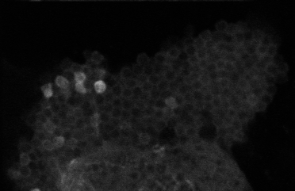
To obtain a movie like that at the command line you can do:
visualiseDriftMovie(data)
This is what the mean of that movie looks like. Notice the blur, which is an indicator there being too much motion. We can think of the goal of the image registration as being to get rid of the blur in the average image.
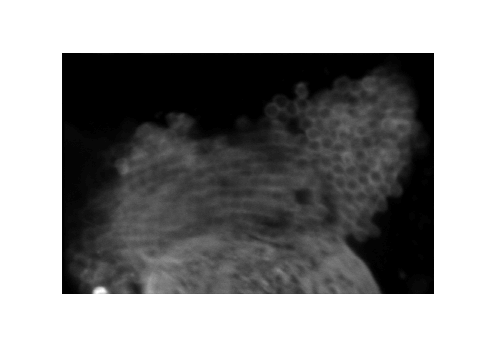
We can quantify the images above by cross-correlating each frame with all the others.
visualiseDrift(data,[],2)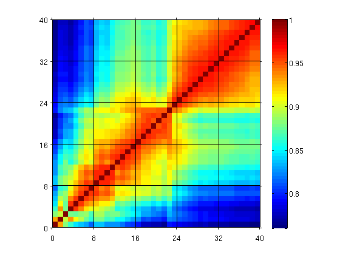
It is now obvious that there are two epochs in this recording repeats: 25 to 40 are all highly correlated and there is little motion across them. There is reasonable correlation with with the earlier repeats. We can check this visually by looking at the movie:
visualiseDriftMovie(data(25:end))
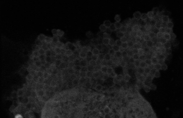
Hmm... Those frames may be more correlated with respect to eachother but there's obviously too much motion. The important thing, however, is that there is no z-drift. What about earlier in the recording?
visualiseDriftMovie(data(1:24))
There is some side to side jogging motion early on (this is clearer if you run the above command at the console, where the movie plays faster than it does on the browser), but this gives way to reasonable stability. What does does the transition point at rep 25 really look like?
visualiseDriftMovie(data(10:end))
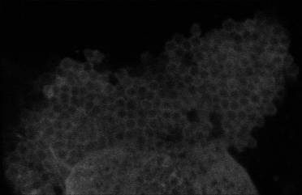
Curious, I don't see a sudden change in brain shape here. Instead, it looks like the transition in the correlation coefficients is simply due to a bright cell in the bottom left that suddenly switches on. So why don't we try aligning all of the trials to the middle frames, where no side-to-side jogging motion is seen. Let's not worry about the brightening cell and the tranistion point in the cross-correlation matrix.
alignRepeats(data,'reference',16) %Align to repeat 16 with a translation correction
Somewhat better, but more work needed
visualiseDrift(data,[],2)
set(gca,'CLim',[0.8,1])
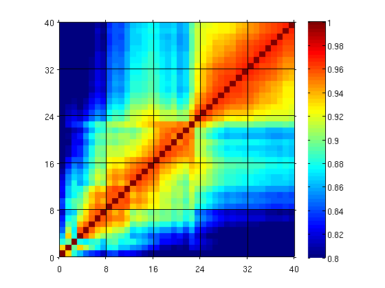 visualiseDrift(data,[],3)
set(gca,'CLim',[0.8,1])
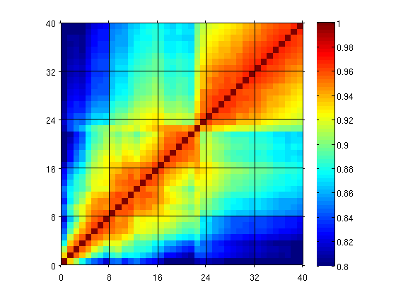 It's clear that, following the alignment, there's an overall higher correlation between frames. What does that look like, though? Lets compare the data movies side by side:
V2=visualiseDriftMovie(data,2); %before the correction V3=visualiseDriftMovie(data,3); %before the correction playMovie({V2;V3})

That's not hugely enlightening, but it does seem as though the upper (un-corrected) sequence is jumping about more in x/_y_. So our translation correction did achieve something useful. It's important to check that, by the way, because sometimes running the algorithm can make things worse. Nevertheless, there is still some side to side jogging motion and, obviously, all that non-linear distortion of the KC somatic field. Let's look at the mean images to confirm what we're seeing in movies:
clf subplot(2,1,1) imagesc(mean(V2,3)), axis equal off subplot(2,1,2) imagesc(mean(V3,3)), axis equal off colormap gray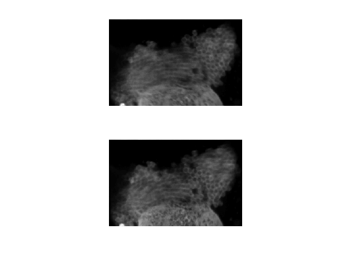
Notice how the calyx at the lower edge of the image looks sharper? That's a good indicator that the translation correction fixed some of the side to side jogging motion. But what we really want to correct is the nasty non-linear distortion. We can try the elastix package that contains algorithms for dealing with such distortions. Here we go!
alignRepeats(data,'reference',16,'algorithm','elastix')
Note that the muStack field has 4 layers now. These correspond to:
- original
- within-repeat translation correction
- across-repeat translation correction
- across-repeat Elastix correction
size(data(1).info.muStack)
ans = 241 372 4
Looks much better!
visualiseDriftMovie(data,4);
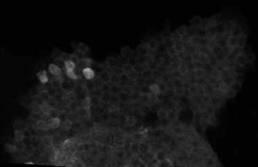
And the mean images:
clf V4=visualiseDriftMovie(data,4); subplot(2,1,1) imagesc(mean(V4,3)), axis equal off subplot(2,1,2) imagesc(mean(V3,3)), axis equal off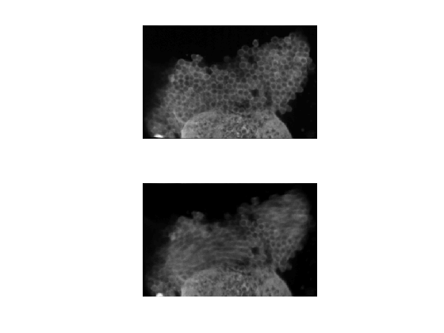
Nice. See how much less blur we have now? All those sharp-looking cells can now be selected as individual ROIs and analysed indepedently. What do the correlation coefficients look like?
visualiseDrift(data,[],4)
set(gca,'CLim',[0.8,1])
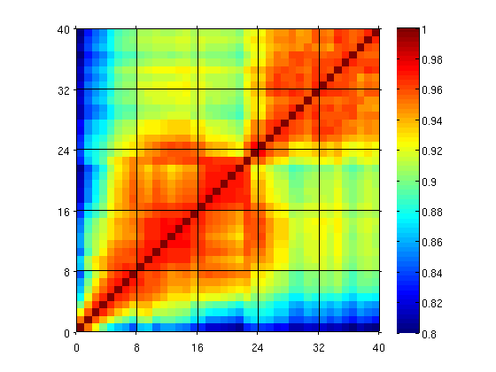 We have presented 8 different odors in randomly interleaved blocks. The black lines demarcate the blocks. We can see that the first 8 repeats are quite different to the rest. Should we get rid of them? To assess this we can carefully look at the following two movies. To get a feel for how stable the recording is, rest the mouse cursor over various cells and evaluate the motion. Does the cell stay under the cursor? (again, this is easier to do interactively at the command line, where the movie plays faster).
visualiseDriftMovie(data(1:end)); %whole movie
visualiseDriftMovie(data(9:end)); %movie with first repeat removed

On balance, I think I prefer the version without the first 8 repeats. Before we remove them, however, we can have another look at the alignment results to see how much improvement is obtained following each registration. A nice way to do this is with a line-graph that shows the correlation coefficients between each mean response image and the mean response image of trial 16, which was our reference for the above registrations. In fact, a version of this line graph is produced during the alignRepeats process, but it was not shown above. Let's do it by hand, here:
R=ones([length(data),length(data),4]); for ii=1:4 [~,R(:,:,ii)]=visualiseDrift(data,[],ii); end ref=16; %The reference image clf hold on col=[0,0,0; 1,0.85,0.85; 1,0.5,0.5; 1,0,0]; for ii=1:4 plot(R(ref,:,ii),'-','color',col(ii,:),... 'LineWidth',2,'LineSmoothing','On') end xlabel('Trial') ylabel('R') plot([8,8],ylim,'g--') hold off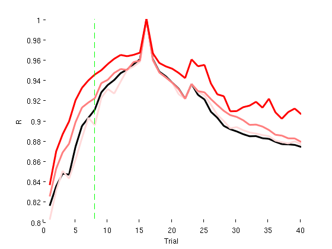
In the above plot, the black are the original data. The pale pink are the data following translation correction within each trial. This shouldn't improve the correlation coefficient between trials and, indeed, it doesn't. The medium pink represents what happens following translation correction. Now there is an improvement. The red is the elastix (non-linear) transform. Clearly this represents the largest improvement. It's also obvious that the the first 8 trials (indicated by green line) are poorly correlated with the others. This plot also indicates that the best thing we could do is get rid of the first 8 trials.
So we do: data=data(9:end);
I'm happy with what I see. So I will commit the registration to disk. The principle of commiting the registration to disk is important because it will save a lot of time. Before the commit is done, every time the raw data are loaded they must pass through the two translation corrections and then through the elastix correction. We have done things this way so that the user has the option of modifying the registration steps whilst they initially explore the data (so different registrations can be explored). This is what happens when we load the image stack from disk now:
tic, size(data(1).imageStack); toc
fftrans fftrans elastix preProcess: warning! More than 7.50% of pixels were <0 (8.52%) Elapsed time is 6.982826 seconds.
regParams(data,'action','commit')
Note the warnings. They aren't a big deal. It's just the Elastix has a tendency to set the low intensity pixels to negative values. We can just ignore these warnings since everything looks good. That was slow, but everything is done now. So we can imediately load the corrected data. e.g.
playMovie(data(1).imageStack,0.01)